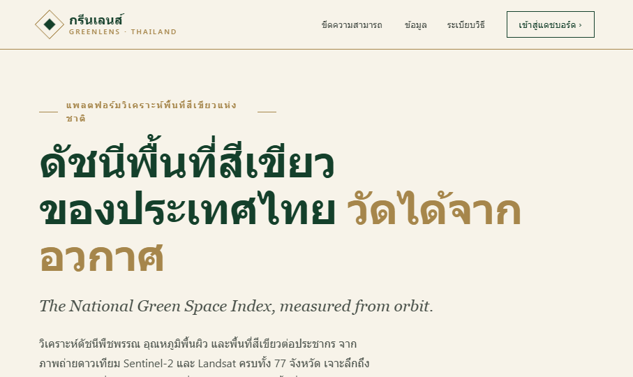
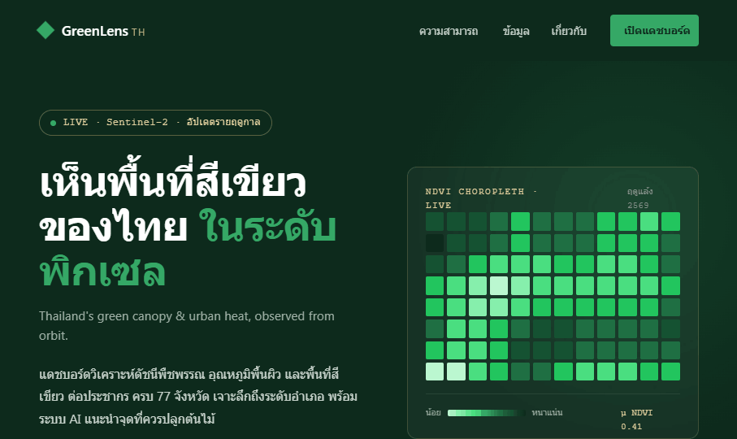
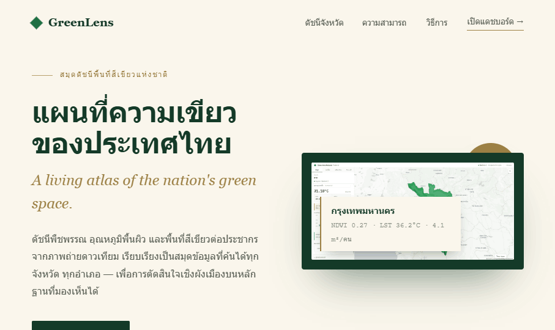

A
ราชกิจจา / Official Gazette
แนวทางที่เป็นทางการที่สุด — กระดาษครีม เขียวเข้ม เส้นทองบาง ตัวอักษร serif สง่างาม
ตัวเลขเรียงแบบสมุดสถิติราชการ เหมาะเสนอผู้บริหารและสภา
Serif display
Gold hairlines
Stat ledger
เลขไทย ๐๑–๐๖

คลิกเพื่อเปิดเต็มหน้า →
B
หอสังเกตการณ์ / Data Observatory
แนวทาง gov-tech ทันสมัย — hero เขียวเข้มพร้อม choropleth NDVI สดจาก CSS
ตัวเลขนับขึ้น ป้ายกำกับ monospace ไฮไลต์ทอง ให้ความรู้สึกเป็นเครื่องมือที่ทำงานอยู่จริง
Dark hero
CSS choropleth
Count-up
Card grid

คลิกเพื่อเปิดเต็มหน้า →
C
สมุดดัชนี / Atlas Index
แนวทางกึ่งนิตยสาร — hero แบ่งซ้าย/ขวา พาดหัวสองภาษาคู่กับแผ่นแผนที่กรอบเขียว
ตามด้วยดัชนีจังหวัดพร้อม sparkbar NDVI โทนครีมอุ่น ทองสง่า จังหวะแบบสิ่งพิมพ์
Split hero
Map plate
Province index
NDVI sparkbars

คลิกเพื่อเปิดเต็มหน้า →